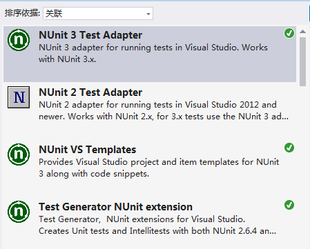
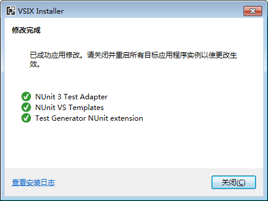
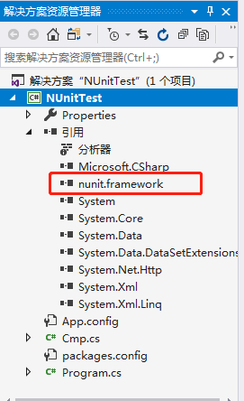
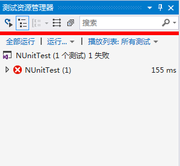
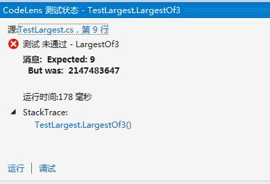

单元测试，是项目成功、个人成功的一个不可或缺的部分。单元测试是相对廉价而简单的技术，但对于程序猿来说，是必须掌握的技术，因为它能够帮助我们更高效地写出质量更好的代码。
自信的编码
下面我讲一个故事。
有一次——或许就是上个礼拜二——有两个开发者：Pat 和Dale。他们面临着相同的最后期限，而这一天也越来越近了。Pat 每天都在着急地编写代码，写完一个类又写一个类，写完一个函数又接着写另一个函数，还经常不得不停下来做一些调整，使得代码能够通过编译。
Pat 一直保持着这种工作方式，直到最后期限的前一天。而这时已经是演示所有代码的时候了。Pat 运行了最上层的程序，但是一点输出也没有，什么都没有。这时只好用调试器来单步跟踪了。“Hmm，决不可能是这样的”，Pat 想，“此时这个变量绝对不是0 啊”。于是，Pat 只能回过头来看代码，尝试着跟踪一下这个难以琢磨的程序的调用流程。
时间已经越来越晚了，Pat 找到并且纠正了这个bug；但在这个过程中，Pat 又找到了其他好几个bug；如此几次过后，bug 还是存在。而程序输出那边，仍然没有结果。这时，Pat 已经筋疲力尽了，完全搞不清楚为什么会这样，认为这种（没有输出的）行为是毫无道理的。
而于此同时，Dale 并没像Pat 那么快地写代码。Dale 在写一个函数的时候，会附带写一个简短的测试程序来测试这个函数。这里没有什么特殊的地方，只是添加了一个简单的测试，来判断函数的功能是否和程序员期望的一致。显然，考虑如何写，然后把测试写出来，是需要占用一定时间的；但是Dale 在未对刚写的函数做出确认之前，是不会接着写新代码的。也就是说，只有等到已知函数都得到确认之后，Dale 才会继续编写下一个函数，然后调用前面的函数等等。
在整个过程中，Dale 几乎不使用调试器；而且对Pat 的模样也有些困惑不解：只见他头埋在两手之间，嘀咕着各种难听的话语，咒骂着计算机，充血的眼球同时盯着好几个调试窗口。
最后期限终于到了，Pat 未能完成任务。而Dale 的代码被集成到整个系统中，并且能够很好地运行。之后，在Dale 的模块中，出现了一个小问题；但是Dale 很快就发现了问题所在，在几分钟之内就解决了问题。
现在，是该总结一下上面这个小故事的时候了：Dale 和Pat 的年纪相当，编码能力相当，智力也差不多。唯一的区别就是Dale 非常相信单元测试；对于每个新写的函数，在其他代码使用这个函数并对它形成依赖之前，都要先做单元测试。
而Pat 则没有这么做，他总是“知道”代码的行为应该和所期望的完全一样，并且等到所有代码都差不多写完的时候，才想起来运行一下代码。然而到了这个时候，要想定位bug，或者，甚至是确定哪些代码的行为是正确的，哪些代码的行为是错误的，都为时已晚了。
什么是单元测试
单元测试是开发者编写的一小段代码，用于检验被测代码的一个很小的、很明确的功能是否正确。
通常来说，我们编写的单元测试并不是针对一段代码或者一个方法，而是针对一个应用场景。即判断某个特定条件下，某个特定函数的行为是否正确。
为什么要使用单元测试
单元测试不但会使你的工作完成得更轻松，而且会令你的设计变得更好，甚至大大减少你花在调试上面的时间。
间接损害
间接损害是：在整个系统中，当某一部分加入了新特性，或者修复了一个Bug之后，给系统的其他（与前面可能是互不相关的）部分引入了一个新的Bug（或者损害）。如果无视这种损害并且继续开发的话，那么将可能带来一个很危险的问题，最后可能会导致整个系统崩溃，并且没人能够修复。
如何使用NUnit进行测试
NUnit集成到Visual Studio 2017中使用
点击菜单栏工具，打开扩展和更新，联机搜索nunit，下载NUnit 3 Test Adapter、NUnit VS Template和Test Generator NUnit extension三个插件。

下载完成后关闭Visual Studio 2017，随后弹出一个界面，点击修改按钮。修改完成后如下。

重新打开Visual Studio 2017，此时已经可以在VS中使用NUnit了。
使用NUnit教程
首先在VS2017中新建一个控制台项目，取名为NUnitTest。并添加一类Cmp.cs，修改代码如下，其中包括被测试的方法。
public class Cmp |
在项目中引入NUnit。点击菜单栏工具，选中Nuget包管理器，打开程序包管理控制台，输入命令Install-Package NUnit。

新建一个用于测试的单元测试类TestLargest.cs，修改代码如下，其中包含测试的方法。
using NUnit.Framework; |
注意：
- [TestFixture(argument)]属性标记类为测试类，若没有填写参数，则测试类必须包含无参构造函数，否则需要相应的有参构造函数。
- [Test]属性标记方法为测试方法。
点击菜单栏测试，选中窗口，打开测试资源管理器。点击运行测试。

测试显示没有通过，结果与期望值不一致。可以查看错误的详细信息。

NUnit的各种断言
NUnit提供了一些辅助函数用于帮助你确定某个被测试函数是否工作正常。这些函数称为断言。
AreEquals
Assert.AreEquals(expected, actual, tolerance [, string message]); |
expected：你期望的值，通常是硬编码。
actual：被测试代码实际产生的值。
message：一个可选的消息，如果提供的话，将会在发生错误时显示。
tolerance：误差。
IsNull
Assert.IsNull(object, [, string message]); |
验证一个给定的对象是否为null（或者为非null），如果答案为否，则将会失败。message参数是可选的。
AreSame
Assert.AreSame(expected, actual [, string message]); |
验证expected参数和actual参数所引用的是否为同一对象，如果不是，将会失败。message参数是可选的。
IsTrue
Assert.IsTrue(bool condition [, string message]); |
验证给定的二元条件是否为真（假），如果为假（真）的话，将会失败。message参数是可选的。
Fail
Assert.Fail([string message]); |
上面的断言将会使测试立即失败，其中message参数是可选的。这种断言通常被用于标记某个不应该被到达的分支。
使用断言
一般而言，一个测试方法会包含有多个断言。当一个断言失败的时候，该测试方法将会被终止，从而导致该方法中剩余的断言这次就无法执行了。因此在继续测试之前先修复这个失败的测试。
NUnit测试的组成
一个test的fixture包含一个或多个测试方法：每个方法包含一个或多个断言。一个程序集可以包含多个test fixture。
分类（Categories）
NUnit用Category的概念提供了标记和运行一个个单独的测试和fixture的简单方法。
可以使用NUnit的Category来把运行时间较短的测试和运行时间较长的测试分开。例如，假设有许多只需要几秒钟就能完成的方法，但是另一个方法却要花费很长的时间才能运行完成。这时候可以通过使用分类名“Short”和“Long”来标记它们。
using NUnit.Framework; |
Per-method的Setup和TearDown
每个测试的运行都应该是互相独立的，因此可以在任何时候以任意顺序运行每个单独的测试。
在每个测试开始之前，需要设置某些测试环境，在测试完成之后，需要释放一些资源。
每个用Setup标记的方法会在每个[Test]方法之前执行，每个测试方法完成后，会调用TearDown标记的方法。
例如，每个测试都需要连接数据库，这时只需要在Setup和TearDown方法中分别建立和释放连接即可。
[] |
Per-class Setup和Per-class TearDown
某些情况下，除了对方法设置运行环境，还需要对test class设置一些环境，以及在类中的所有方法都执行完成后做一些清理工作。只需要在声明setup方法的时候标记如下attribute。
[] |
自定义NUnit断言
在某些环境下，假如要处理一个特殊数据类型，或者处理对多个测试都共享的一系列操作时，使用自定义断言更加方便。
假如所有的测试都会使用一种数据类型Money。
using System; |
对于项目中需要测试Money类的其他测试类，都可以使用我们自己定义的断言。
using NUnit.Framework; |
NUnit和异常
测试方法被期望抛出一个异常。如果没有抛出异常，测试将会失败。如果异常如预料的抛出了，测试将会通过。一旦期望的异常抛出了，那么测试方法中剩余的代码就会被跳过。
[] |
临时忽略一些测试
NUnit使用[Ignore]属性告诉测试框架，跳过该测试。
[] |
测试哪些内容
Right-BICEP
Right-BICEP是6个值得测试的具体部位的统称，能提高我们的测试技巧。
- Right——结果是否正确？
- B——是否所有的边界条件都是正确的？
- I——能查一下反向关联吗？
- C——能用其他手段交叉检查一下结果吗？
- E——你是否可以强制错误条件的发生？
- P——是否满足性能要求？
结果是否正确
使用数据文件
对于许多有大量测试数据的测试，可以考虑用一个独立的数据文件来存储这些测试数据，然后用单元测试读取该文件。
using System; |
边界条件
一想到可能的边界条件的简单办法就是记住助记短语CORRECT，对于其中每一条，想想是否存在于被测试方法中的某个条件非常类似。
- Conformance（一致性）——值是否和预期的一致。
- Ordering（顺序性）——值是否如应该的那样，是有序或者无序的。
- Range（区间性）——值是否位于合理的最小值和最大值之内。
- Reference（依赖性）——代码是否引用了一些不在代码本身控制范围之内的外部资源。
- Existence（存在性）——值是否存在（例如，是否为非null，非0，在一个集合中等等）。
- Cardinality（基数性）——是否恰好有足够的值？
- Time（相对或者绝对的时间性）——所有事情的发生是否有序的？是否在正确的时刻？是否恰好及时？
检查反向关联
对于一些方法，我们可以使用反向的逻辑关系来验证它们。例如，可以用对结果进行平方的方式来检查一个计算平方根的函数，然后测试结果是否和原数据很接近。
[] |
类似地，为了检查某条记录是否成功地插入数据库，也可以通过查询这条记录来验证，等待。
使用其他手段来实现交叉检查
计算一个量会有一种以上的算法。我们可能会基于运行效率或者其他的特性来选择算法。
在测试系统中，可以使用算法中的一个来交叉测试结果。
我们可以充分利用一些比较弱的版本来检查我们新写的超级漂亮的版本，看它们是否产生了相同的结果。
[] |
强制产生错误条件
在真实世界中，错误总是会发生：磁盘会满，网络连接会断开，电子邮件会多得像掉进了黑洞，而程序会崩溃。你应当能够通过强制引发错误，来测试你的代码是如何处理所有这些真实世界中的问题的。
可能存在的环境方面的约束有：
- 内存耗光。
- 磁盘用满。
- 时钟出问题。
- 网络不可用或者有问题。
- 系统过载。
- 受限的调色板。
- 显式分辨率过高或者过低。
边界条件
代码中的许多Bugs都出现在“边界条件”附近，也就是说，在那些条件下，代码的行为可能不同于平常的、每天都能运行到的程序路径。
一致性
很多时候，你所期望的或产生的数据必须符合某种特定的格式。比如一个e-mail地址并不仅仅是一个简单的字符串。你期望e-mail地址是这样的格式：name@somewhere.com
必须要考虑到：如果数据不能像你期望的那样与结构相一致，将会出现什么情况。这时就需要测试结果并确保其一致性。
有序性
另一个需要考虑的方面是数据的顺序，或者是在一个很大的数据集合中某一数据的位置。
有序性的一个方面是：任何一种搜索程序都应该针对搜索目标位于最前或者最后的条件做测试，因为许多常见的Bug在这种情况下都能找出来。
有序性的另一个方面：如果你的方法是让某些元素维持有序，就应该检查一下它们是否真的有序。
假设有一个方法，负责把点菜菜单发送到厨房，那么应该做一个测试来保证菜单上的菜目顺序符合正确的上菜顺序（沙拉、主菜、甜点）：
[] |
区间性
Range是一个针对所有类似下列情景的单词：对于一个变量，它所属类型的取值范围可能比你需要或想要的更加宽广。
例如，通常用整型表示一个人的岁数，显然20000岁是合法的整型数，但不是合理的。用整型来存储角度，在一个圆中，角度值不会大于360度。
假设有一个维护了两对x，y坐标的类。坐标值都属于整型，并且可以具有任意值；但是，区间具有如下约束：两个点必须能够描述一个所有边都不大于100个unit的矩形。也就是说，这两对x，y值的允许区间是相互依赖的。
public const int MAX_DIST = 100; |
几乎所有的索引概念（无论是否为整型索引）都应该被大量的测试。
- 开始索引和结束索引有相同的值。
- 第一个索引值大于最后一个索引值。
- 索引值是负的。
- 索引值大于允许值。
- Count不能匹配确切索引的个数。
引用/耦合性
如果对于类的状态、其他对象的状态，或者全局应用程序的状态，你需要做一些假设，那么你就需要对代码进行测试，保证其在假设未满足的情况下运行良好。
例如，汽车微处理控制传动器的代码可能有一组用来检查一下特殊情况的测试：传动器的状态（是否切换到停车档）取决于汽车的状态（处于移动状态还是停车状态）。
[] |
一个已知方法的前条件是指：系统必须处于什么状态下，该方法才能运行。在上面的例子中，使传动器停止的前条件就是汽车的发动机必须停止。因此我们需要确认：当前条件不能满足的时候，程序的行为仍然是正确的。
在方法的最后，后条件是指：你的方法将会保证哪些状态发生。程序直接返回的结果显然是要检查的，但如果程序具有任何副作用，那你也需要对它们进行检查。
存在性
对于你传入或者维护的值，先询问自己如果值不存在——如果它为null，或者为空，或者等于0，方法的行为将会怎么样？
因此，你要确认你已经做了足够的测试：null、0、空字符串和其他与存在性相关的陷阱。
确认你的方法处理了“不存在”的情况。
基数性
这是一个和存在性相关的问题，但是你现在需要确信：你计算得到的数目和你所需要的数目是一致的。
测试专注于0、1、n这样的边界条件上，其中n的数值也很可能会随着业务需求而变化。
时间性
边界条件中，与时间相关的方面包括：
- 相对时间（时间上的顺序）。
- 绝对时间（消耗的时间和钟表上的时间）。
- 并发问题。
- 一些接口会拥有自己的状态；因此，为了维持这些内部状态，你期望Login()会在Logout()之前被调用，PrepareStatement()会在ExecuteStatement()之前被调用，Connect()在Read()之前被调用，而Read()又在Close()之前被调用。
- 相对时间也许还包括代码中的超时问题：为了获得一个存活期较短的资源，你的函数会等待多长时间。
- 一年中的每一天不一定是24小时。
- 要是有多个线程同时使用同一个对象，会出现什么问题（并发访问和同步访问）。
使用Mock对象
单元测试的目标是只验证一个方法。但是如果测试代码依赖于系统的其他部分，甚至系统的多个其他部分，诸如网络、数据库等。为了给某一测试创造足够的运行环境，这样不仅消耗了时间，还给测试过程引入了大量的耦合因素。
Mock对象
Mock对象是真实对象在调试期的替代品。
真实对象存在的问题：
- 真实对象具有不可确定的行为（产生不可预测的结果，如股票行情）。
- 真实对象很难被创建。
- 真实对象的某些行为很难触发（如网络错误）。
- 真实对象令程序的运行速度很慢。
- 真实对象有（或者是）用户界面。
- 测试需要询问真实对象它是如何被调用的。
- 真实对象实际上并不存在。
使用Mock对象进行测试的时候，有三个步骤：
- 使用一个接口来描述这个对象。
- 为产品代码实现这个接口。
- 以测试为目的，在Mock对象中实现这个接口
MockDemo
先创建针对真实环境因素的几个对象，其中一个因素就是当前时间：
public interface Environmental |
编写真实的实现代码：
public class SystemEnvironment : Environmental |
mock实现：
public class MockSystemEnvironment : Environmental |
Checker类：
public class Checker |
测试代码：
[] |
使用Moq框架
假定现在要做一个计算器提供基本运算和不同货币的转换。
首先定义一个计算器接口：
/// <summary> |
定义人民币转换美元的接口：
/// <summary> |
Calculator的实现类，其中人民币转美元的接口实例以构造函数参数的形式传给Calculator类：
public class Calculator : ICalculator |
测试Divide方法的测试代码：
[] |
注意：
- prvGetMockExchangeRateFeed方法用于构造一个IUSD_RMB_ExchangeRateFeed接口的Mock对象（模拟真实对象）。
- mockObject.Setup(m => m.GetActualUSDValue()).Returns(500)，设置Mock对象中GetActualUSDValue方法的返回值为500，这样的好处是不需要对IUSD_RMB_ExchangeRateFeed接口进行实现。
- NUnit3以后的版本不支持ExpectedException特性，用Assert.Throws()代替。
好的测试所具有的品质
单元测试如果使用不当会浪费你的大量的时间，从而对项目造成巨大的影响。另一方面，如果没有恰当地编写和实现单元测试，在维护和调试这些测试上面，很容易就会浪费很多时间，从而影响产品代码和整个项目。
好的测试应该具有以下品质，合称为A-TRIP：
- 自动化（Automatic)。
- 彻底的（Thorough）。
- 可重复（Repeatable）。
- 独立的（Independent）。
- 专业的（Professional）。
自动化
单元测试需要能够被自动地运行。“自动化”至少包括两方面的含义：调用测试自动化和检查结果自动化。
调用一个或多个单元测试必须是非常容易的，不能比在IDE中按下一个按钮或者在提示符下键入一行命令更复杂。
不要引入一个由于需要手动步骤而打破这个自动化模型的测试。对于测试需要的任何条件（数据库，网络连接等）都应该让它们成为测试自身的一个自动化组成部分（使用Mock对象）。
测试必须能够自己决定它是通过了还是失败了（让测试能够检查自身）。
彻底的
好的单元测试是彻底的：它们测试了所有可能会出现问题的情况。
- 一个极端是，对于每行代码、代码可能达到的每个分支、每个可能抛出的异常等等，都可以作为测试的对象。另一个极端是，你仅仅测试最可能的情况，边界条件、残缺和畸形数据等等。
- Bug并不是均匀分布于源代码之中的：相反，它们更倾向扎堆于一块问题区域之中。
- 抛弃一块有很多Bug的代码并且重新编写会令开销更小、痛苦更少。
可重复
每个测试应该独立于所有其他的测试，而且还必须独立于周围的环境。目标只有一个，就是测试应该能够以任意的顺序一次又一次地运行，并且产生相同的结果。这意味着测试不能依赖于不受你直接控制的任何外部因素。
- 在必要的时候，应该使用Mock对象来隔离测试的外界因素，并且使测试能够独立于环境。
- 每个测试应当每次产生相同的结果。如果没有，那么它应当告诉你代码中存在真正的Bug。
独立的
测试应该是简洁而且精炼的，这意味着每个测试都应该有很强的针对性，并且独立于环境和其他测试。
- 在编写测试时，确保你一次只测试了一样东西。（一个测试函数应该专注于产品代码中的一个函数，或者组合起来并共同提供某个特性的一组函数）
- 一个测试函数可能仅仅测试了产品代码中的一个复杂函数的一小部分，此时你可能需要多个测试函数来完全彻底地验证该函数。
- 理想情况下，你能够在潜在的Bugs和测试代码之间有可跟踪的对应关系。（当一个测试失败了，应该立刻就可以知道代码中潜在Bugs的位置。
- “独立的”还意味着没有测试依赖于任何其他的测试；你应当可以在任何时候以任意顺序运行任何单个测试。
专业的
你为单元测试编写的代码是真实的，这意味着必须使用和产品代码相同的专业水准来编写和维护测试代码。